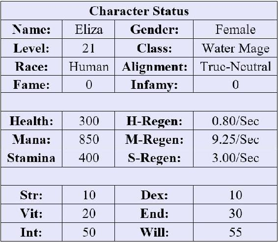

Eliza’s fingers dug into the loose soil and wrapped around the base of the plant. She pulled hard, ripping the weed out of the ground before tossing the offending plant onto the swiftly growing pile beside her. She paused for a moment, rubbing at the sweat that had formed on her forehead as she surveyed the garden.
“You’re doing well, girl,” Alma called from behind her.
Eliza turned and caught sight of the older woman standing in the doorway to her laboratory. She wore thick woolen clothing stained with splotches of green and red – evidence that she had been hard at work creating another batch of potions. The woman leaned heavily on her crooked wooden cane as her eyes scanned the garden appreciatively.
“Thank you, Alma,” Eliza replied with a small, embarrassed smile. “It’s the least I could do for you since you took me under your wing.”
“Nonsense,” the woman replied with a wave of her hand. “You’re a fast learner. Few of my other apprentices have picked up the trade as easily as you. Speaking of which, why don’t you pick some Dragon’s Breath and come help me inside. I promised to brew a batch of healing potions for Clarence’s men. It seems they are unusually prone to injuring themselves.”
Eliza nodded agreeably. Clarence ran the local lumber mill outside of Falcon’s Hook. Unfortunately, injuries weren’t uncommon in that profession. “Just give me a moment, and I’ll meet you inside,” Eliza replied.
Several more days had passed in-game, and Eliza had spent that time working in Alma’s garden and her laboratory. She had been relentless in her pursuit of more knowledge, memorizing the plants in Alma’s books and insisting that the older women teach her as many potions as possible. In contrast to her regular school work, she loved her new fantasy garden.
Eliza gingerly stepped around a Thicker Thump plant, maintaining a distance of at least two feet. She knew if she got too close to the bush, it would shoot small thorns in her direction – which would be covered in an irritant that would give her an itchy rash. She had learned the hard way that there were some aspects of AO that were perhaps a bit too realistic.
She had also discovered that many of the garden’s plants were rather violent – or extremely poisonous – so navigating the garden needed to be done with care. After a moment’s trek through the various rows of plants, she found her target – a dark green plant with large, vibrant red bulbs. Dragon’s Breath was an intimidating name, but it was actually one of the less dangerous plants she had encountered.
She carefully plucked two of the red bulbs and deposited them in the pocket of her apron, quickly wiping off the crimson powder that clung to her fingers on the coarse cloth. She could already feel her fingertips begin to tingle as the numbing effect of the powder took hold. As she deposited the ingredients, a blue notification flashed in Eliza’s vision.
| x1 Level Up! |
| You have (5) undistributed stat points. |
x1 Skill Rank Up: Herbalism
Skill Level: Beginner Level 6
Effect: Allows the player to harvest more difficult or dangerous plants. 3% chance for double ingredients.
Eliza surveyed the notifications carefully. She had leveled quite quickly over the last few days – although, admittedly, the time compression meant that nearly a week had already passed in-game since she had begun playing. It had been a while since she had reviewed her Character Status and so she decided to check on her progress.

She had decided to put points in Endurance and Vitality to improve her ability to work in the garden, which made her tire slower. The remaining points went to Intelligence and Willpower, which improved her ability to cast simple spells and learn recipes. However, working in the garden didn’t require much Strength or Dexterity, so she hadn’t allocated any points to those stats.
Eliza started back toward the cottage, picking her way carefully through the rows of vegetation. As she neared the door, she hesitated and promptly slapped a palm to her forehead. She had nearly forgotten to water the garden.
Turning back to the rows of plants behind her, her hands automatically began to dart through a series of practiced motions as arcane words slipped from her lips. A ball of water slowly formed in front of her, condensing into a rough sphere about the size of a basketball. As Eliza uttered the last word of the spell, the orb erupted into a thick cloud of mist, the fog drifting back over the garden and coating the plants with moisture.
Eliza smiled slightly as she watched the spell work. She had learned that Obscuring Mist was intended to be a defensive spell for water mages, but she had found it incredibly useful for watering Alma’s garden. After her encounter with the Hippie and his faithful black-haired companion, she had realized that the irritating young man had chosen her spells for her. In addition to Obscuring Mist, she could also cast Ice Bolt and Cold Grasp. The first was a simple damage spell that shot a shard of ice. The second was some type of slowing spell or something. She hadn’t had any occasion to use those two spells yet, and she wasn’t sure how useful they would actually be in helping Alma.
Her chores accomplished, Eliza stepped into the house. In contrast to the brightly-lit garden, the cottage was dim and, it took her eyes a moment to adjust. The familiar rows of tables greeted her, and Alma had already placed the necessary equipment on one of the counters.
“You can go ahead and prep the Dragon’s Breath,” Alma advised, motioning to the table beside her. “I’m setting up the distiller as we speak.” Her wrinkled hands worked to connect a series of tubes to a flask set over a small burner.
Eliza nodded wordlessly and deposited the red bulbs on the table. She grabbed a mortar and pestle from one of the nearby shelves and swiftly set to work grinding up the bulbs into a fine paste. They would then boil the mixture down and distill the oil.
The pair worked in sync as they made the potions. One of the things that Eliza liked about Alma was that she didn’t demand constant conversation. She also didn’t put any real pressure on Eliza to work – giving her free range to study her books and work in the garden as she pleased. In contrast to her real life, this felt like a vacation.
Once the waiting vial had been filled with the distilled oil, Eliza poured the substance into several glass flasks filled with purified water. She carefully stoppered the potions and shook them gently to mix the contents. Soon she had a set of bright red potions sitting on the table before her. She then placed the set of vials into a bag on the table.
“Would you like to deliver them?” Alma asked, eyeing her carefully. “It might do you some good to get out and see the city a bit. You spend most of your time cooped up in the garden.”
| New Quest: Deliver the Potions |
|
Alma has asked you to deliver a batch of health potions to Clarence – again. You know the gist, do some walking. Then maybe hand a bag to someone and walk back to the cottage.
Difficulty: F Success: Deliver the potions. Failure: Don’t deliver the potions? Reward: Absolutely nothing. Why are you doing this?
|
Eliza shook her head at the quest prompt. In the beginning, the text hadn’t been nearly so sarcastic and had outlined different quest rewards. Now all she received were these passive aggressive messages implying that these simple quests were a waste of time. The tone of the prompts also sounded suspiciously like the Hippie.
“I’d be happy to help,” she replied to Alma, grabbing the small bag. She removed her apron and strapped the bag to the belt at her waist. She also collected her pack containing a crude set of alchemy tools, some extra herbs, the potions she had created so far, and a few empty containers in case she stumbled upon some interesting plants on the way to Falcon’s Hook.
“I’ll be back in a bit.”
“Be careful, girl,” Alma called out behind her as she left.
Be careful of what? Eliza thought dryly. There’s nothing between here and the city.
She started her journey by following the rough trail through the thinning woods. The Hippie hadn’t made an appearance since he had tried to drown her, but she kept an eye peeled anyway. The trail soon connected to a full-fledged road where she joined other NPCs and players on their trek back to the city.
Eliza eyed the other travelers as she walked, noting their dusty clothing and blood-stained armor. They spoke animatedly – most traveling in groups of four or five people. In contrast, Eliza walked alone and kept her head down, avoiding eye contact. After a few minutes, she caught sight of the walls of the city ahead of her. The massive piled layers of stone towered into the sky, forming a ring around the multi-tiered buildings inside.
“Running yet another errand?”
Eliza whirled and discovered that the Hippie was walking beside her with Fluffy in tow. The sheep scooted over beside Eliza, bumping against her and eyeing her with a woeful expression. Taking pity on the sheep, Eliza petted his head absently, causing his eyes to roll back in bliss.
“Yes, yes I am,” Eliza said shortly. “Is that a problem?”
“Not really. It’s just incredibly dull is all. Do you happen to know how many times you have performed this particular quest?”
“I haven’t been counting,” Eliza replied. She had. It was the eighth time she had run this type of errand.
“Mmhmm,” the Hippie said in an unconvincing tone. “Well, my chosen one needs to be doing more impressive feats,” he continued, throwing his arms wide. “Grand sweeping battles. Maybe tame a dragon. Rescue a damsel… or…err, an eligible bachelor maybe?” He hesitated. “Although, it doesn’t look good that the guy went and got himself captured in the first place. You really should save yourself for someone that can hold his own – you don’t need a project at your age.”
Eliza grimaced at the Hippie’s unsolicited dating advice before glancing at the other NPCs and players that shuffled along within earshot. She was surprised that they weren’t reacting to this strange conversation. “I didn’t ask to be your chosen one,” she whispered quietly.
“Of course not,” the young man replied in surprise. “That isn’t the way this works. You’re my chosen one – not my volunteered one. At least, that’s how I think it works.” He looked a little confused for a moment. “The others told me that I was the one that did the choosing...”
“The others?” Eliza asked, pushing at her glasses with one finger and watching the Hippie with curiosity. “What others?”
“The other gods!” the Hippie replied, placing a hand on his chest. “Just like me!”
“You’re a god?” Eliza inquired incredulously. “You certainly don’t look like a god. Or act like one.”
The young man looked a little flustered and then pointed at his sheep. “Just ask Fluffy. He knows!” The animal shook his head in what appeared to be exasperation.
“Okay, sure. You’re a god. So why did you choose me?” Eliza asked, deciding to play along for the moment. Maybe she could lose him in the crowd once they got to the city.
“I explained that already! The other gods told me I had to. Especially my prudish sister. She was quite adamant about it. Something about maintaining the balance. Apparently, there was a little tiff, and a city was destroyed or something,” he added with a dismissive wave of his hand. “I don’t have much interest in politics, you know.”
“You mean Lux?” Eliza asked in surprise. She might be a bit anti-social, but she had seen the in-game notification when Jason conquered the city – along with the rest of the game world. The rumor was that he had apparently taken out an in-game city by himself.
The Hippie tapped his lips thoughtfully. “That might be it. Sounds familiar.” He glanced at Eliza. “You need to go do some amazing things like that!”
“No,” Eliza said.
“What do you mean, no?”
“I mean that I’m happy with what I’m doing. I like Alma, and I enjoy learning alchemy.” She shrugged. “I don’t want to conquer a city.”
“Well, I don’t want to either,” the Hippie replied in exasperation. “But my siblings were quite insistent. We all have to do things we don’t want to do,” he added with a frown.
“Not me,” Eliza said.
The Hippie sighed. “Oh, come on. Just one epic quest? Maybe a small one to start? We can ease you into it.”
“No,” Eliza replied.
“You haven’t even seen it yet!”
“Don’t care. I’m just going to deliver these potions and return to Alma’s cottage.”
“Here, at least read the prompt,” the Hippie said, waving his hands in the air animatedly. Eliza looked at the people around them in alarm. Could they not see or hear the Hippie?
A blue notification abruptly appeared in her vision:
| New Quest: Grand Fetch Quest |
|
The Great Black Sheep has offered you a truly special errand – we heard you enjoy those. Fluffy…err… we mean the Great Black Sheep has lost an item of infinite importance. Retrieve this item and claim your reward!
Difficulty: A Success: Find and retrieve the item. Failure: Make Fluffy cry. Reward: Something special.
|
“Are you kidding me?” Eliza asked.
“Not at all,” the Hippie replied, looking a little miffed. “Fluffy lost something important, and I need you to go find it.” He glanced at the sheep and then back at Eliza. “If you won’t do it for me, at least do it for his sake.”
The Hippie nudged the black sheep and Eliza could have sworn the animal sighed before turning to look at her with a baleful expression. She could see a lone tear hanging under one of its eyes as it let out a soft bleat.
“That’s low,” Eliza muttered, turning away. “But the answer is still no.” She could see that they were nearing the gates. She quickened her pace slightly, ready to be done with this conversation. Yet this didn’t help, as the Hippie easily kept pace.
“Well, I didn’t want to have to do this, but you leave me no choice.” The young man waved his arms again in a dramatic series of gestures.
And nothing happened.
“I left you no choice but to wave your arms like a crazy person?” Eliza asked, slowing and watching him in confusion.
A raindrop landed on her face, and she wiped at her cheek. She glanced up and noted that the sun still shone brightly and only a handful of clouds drifted through the sky. And yet more rain continued to fall – quickly escalating in intensity. Eliza immediately realized that the rain only fell in a straight line that ran across the road directly in front of her and extended into the distance on either side. Within seconds, a torrent was falling from the sky, creating a veritable wall of water.
“What is…?” Eliza trailed off as she watched other players and NPCs walk through the barrier with no issue. They didn’t even seem to notice it was there.
“It’s a Water Fall Wall,” the Hippie replied proudly, stumbling slightly as he said the words. “Try to say that three times fast!” Fluffy snorted softly beside him – whether in amusement or pain, Eliza wasn’t sure.
“Why can’t they see this?” Eliza asked the Hippie, gesturing at the other players. A few of them glanced at her with a confused expression but kept walking.
He shrugged. “I’m a god. Travelers and other residents of this world can’t see me unless I choose to let them. I could have sworn I mentioned that...”
“Fine, whatever. I’m just going to go through,” she replied, her frustration mounting. She wouldn’t be forced into playing the capricious god’s games.
Eliza plowed forward, approaching the wall of water. As she neared it, the torrent strengthened until it was pounding against the stone and dirt of the roadway. She tried to reach out an arm to touch the wall, but the water intensified further, and she was pushed back. Apparently, the wall was intended to prevent only her from entering the city.
She glanced back at the Hippie. “This isn’t fair,” she muttered. She noticed a few players and NPCs eyeing her askance as they walked through the water wall.
“Life’s not fair,” the god said with another shrug. “May as well accept it.”
Then a smile crossed his face. “Now about my quest…”